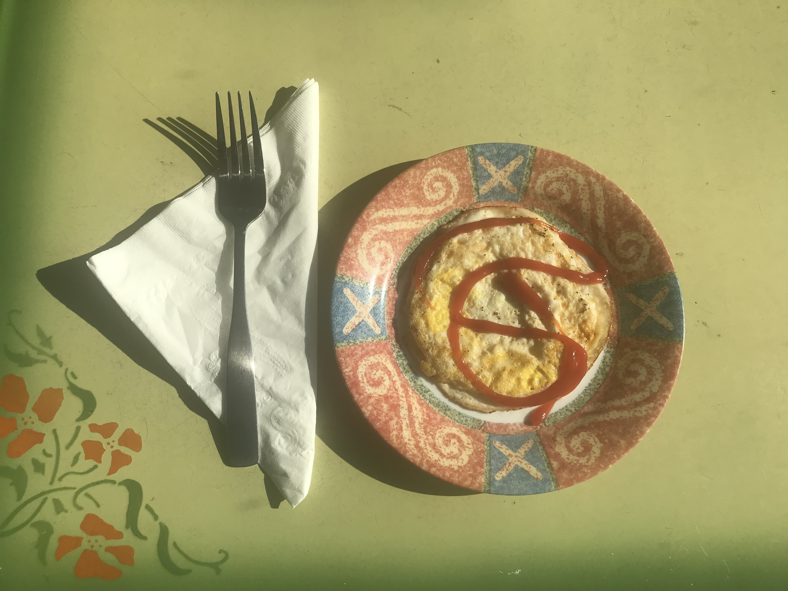

How to cook a Carl Fried Egg
This is my version of a sunny side up egg. However, you do not get that thick yoke that some folks don't like.

Needed Items
- One egg
- Small non-stick pan
- Stove
Directions
- Pre-heat pan and melt some quality butter.
- Rinse off your egg.
- Wiggle pan to make sure butter is coating entire bottom and the sides.
- Crack the egg and gently break into the pan.
- Here is Carl's secret.
- Grab a fork
- Gently slide the fork tines down into the Albumin (thick part of egg white).
- Turn the fork so that you are gently stabbing into the yoke about half way from the bottom.
- Gently wiggle the fork so that the yoke can bleed out into the albumin.
- Now, gently reverse out of the yoke and then the albumin.
- NOW, the yoke will bleed into the albumin.
- However, it should stay inside the albumin and NOT spill out over the pan.!!